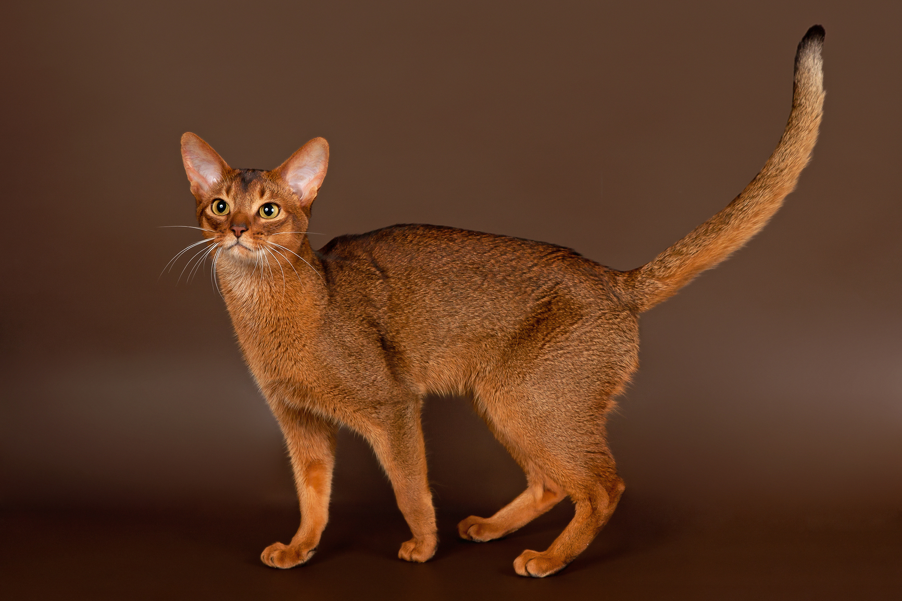

Plemena koček
Díky šlechtění vznikla celá řada jednotlivých plemen kočky domácí, která se navzájem liší nejenom barvou srsti a její kvalitou, ale i stavbou těla, velikostí a barvou očí i povahovými vlastnostmi. I v současné době vznikají nová plemena koček. Šlechtění koček si vyžaduje znalosti o daném plemeni (znalost uznaného standardu vyhlášeného FIFe, případně jiných organizací, které dané plemeno uznávají. Zároveň je třeba být členem nějakého klubu chovatelů, který svými vnitřními předpisy usměrňuje pravidla chovu koček s průkazem původu. Do chovu jsou v dnešní době připuštěni pouze jedinci odpovídající platnému standardu. Stejně jako u všech ostatních domácích zvířat, i u kočky domácí se setkáváme s velkým množstvím vyšlechtěných plemen. Plemena jsou rozděleny do 4 skupin:
Zástupci
Dlouhosrsté kočky
Polodlouhosrsté kočky
Americká kadeřavá kočka dlouhosrstá